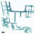
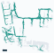
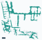

先看结论
完成数据1,38112.09 小时 · 1 个场景
规则滤除00.00% · 0.00 小时
过滤后保留1,38112.09 小时
全量参考均分9.81/10不是成功率或人工真值
覆盖面积损失0.00个百分点 · 同一地图分母
本批仅将已通过筛选的 5 Hz 冻结轨迹按同一时间轴重放为 2 Hz；起点、终点和轨迹几何未重新规划。1,381 条均完成，保留 12.09 视频小时。独立运动核验的峰值速度为 1.9982 米/秒，处于 2 米/秒配置上限内。
正式过滤
近黑画面、末段左右抵消、末段累计转向、最后 2 秒净转向和末 5 秒相机夹角五项规则均为 0 条；40 条仅作为审查线索，不自动移出保留集。
视频与运动
全部 1,381 个视频均可解码；首、中、末共 4,143 帧正式抽检未见近黑区域超阈值。采样率为 2 Hz，85,632 个运动区间没有超过配置速度上限 1% 的区间。
地图覆盖
在本次实际机器人半径绑定的 NavMesh 上，保留集通道覆盖为 90.65%，1 米邻近覆盖为 98.32%；本批无正式过滤，因此过滤前后覆盖相同。
| 场景 | 完成条数 / 小时 | 规则滤除 | 保留条数 / 小时 | 原始参考均分 | 保留集参考均分 |
|---|
| 深圳办公室 | 1,381 / 12.09 | 0（0.00%） | 1,381 / 12.09 | 9.81 | 9.81 |
本批计划与完成均为 1,381 条，没有退出采集的路线。所有完成路线均进入保留集；低速、路线长度、曲折度、余量和探索性画面指标均未被扩展为自动过滤条件。
保留集均分上涨部分来自按同一套指标筛选，不能据此独立证明过滤效果；新的人工标签才可校准评分与误杀。
实际速度：从低速到 2 m/s 分段展开
按实际位姿计算，全部路线共行驶 25.18 千米。含低速和原地转向的时间加权均速为 0.588 米/秒，仅速度 >0.05 米/秒的移动区间为 0.704 米/秒，峰值为 1.998 米/秒。速度≤0.05 米/秒占总时长 16.63%；近停不等于视频卡住。
本批配置速度上限为 2 米/秒，采样频率 2 Hz。共 85,632 个相邻位姿区间；速度=水平位移÷时间，属于区间平均值，不是瞬时峰值。运动时长少于视频时长的差额来自每条视频比相邻帧区间多一帧，不是缺帧。
速度分布：过滤前后时间占比
横轴单位为米/秒，各档左开右闭；纵轴按真实区间时长加权。过滤前后分别归一到各自时长，不能把曲线变化解释为速度规则筛选。同一速度区间：耗时与路程
时间和距离各自合计100%。低速可能耗时较长但移动很少；高速距离占比更能反映高速度承担的实际行程。每条路线的全程均速（米/秒）
每条路线权重相同。均速包括原地转向与近停；峰值只要出现一个区间就会记录，不能代表整条路线持续保持该速度。各档左开右闭。每条路线的最高区间速度（米/秒）
每条路线权重相同。均速包括原地转向与近停；峰值只要出现一个区间就会记录，不能代表整条路线持续保持该速度。各档左开右闭。不同长度路线的实际均速
按水平路径长度分组，再按各组真实时长加权。移动时均速仅保留速度>0.05米/秒的区间；长短路线加减速和转向比例不同，不按纯长度判质量。各组条数：≤5米 78条、5–15米 470条、15–30米 657条、>30米 176条。高速究竟覆盖多少数据
三个阈值是嵌套条件，不能相加。曾达到只要求至少一个区间；时间、距离、路线三种分母分开计算，均为全量数据。展开速度区间精确统计与下载
| 速度区间（m/s） | 全量区间数 | 全量时间占比 | 全量距离占比 | 保留集时间占比 |
|---|
| ≤.01 | 11,744 | 13.714% | 0.019% | 13.714% |
| .01–.05 | 2,498 | 2.917% | 0.133% | 2.917% |
| .05–.2 | 4,649 | 5.429% | 1.143% | 5.429% |
| .2–.4 | 16,261 | 18.989% | 10.829% | 18.989% |
| .4–.6 | 14,884 | 17.381% | 14.453% | 17.381% |
| .6–.8 | 11,661 | 13.618% | 16.296% | 13.618% |
| .8–1 | 8,985 | 10.493% | 15.870% | 10.493% |
| 1–1.2 | 5,474 | 6.392% | 11.859% | 6.392% |
| 1.2–1.4 | 3,345 | 3.906% | 8.574% | 3.906% |
| 1.4–1.6 | 2,175 | 2.540% | 6.458% | 2.540% |
| 1.6–1.8 | 1,651 | 1.928% | 5.564% | 1.928% |
| 1.8–2 | 2,305 | 2.692% | 8.803% | 2.692% |
| >2 | 0 | 0.000% | 0.000% | 0.000% |
水平区间速度超过实际约束 1% 容差的区间数：0。完整动力学越限还需检查速度状态、角速度、加速度及 jerk；本项不替代这些检查，也不新增高速黑名单。
速度较高的可复核样例
| 样例 | 长度 | 均速（m/s） | 峰值（m/s） | 人工复核 |
|---|
| 保留集最快候选 | 33.7米 | 0.675 | 1.998 | 完整人工质检台仅限内网访问 |
这里按速度选样，不把速度大本身视为异常；画面与转向表现以人工复核及现行五项规则为准。
正式过滤：只沿用五项已确认条件
五类可以重叠，条数不能直接相加。黑名单只包含这五项规则命中；画面疑点和相对低分不自动扩大黑名单。
三帧抽检最大连片近黑区域 >10%
0 条 · 0.00%首、中、末三帧缩到 64×36；RGB 三通道都≤8 的最大四连通块占画面比例，取三帧最大值。
逐轨迹明细仅限内网访问扩展末段左右抵消 >10°
0 条 · 0.00%窗口取最后 2 秒与最后 1 米中较长的一段。抵消量=累计绝对转角−净转角绝对值；转向之间夹杂平移也累计。
逐轨迹明细仅限内网访问扩展末段累计转向 >95°
0 条 · 0.00%与左右抵消使用同一扩展末段；每一步转角先取绝对值再累计。恰好 95° 不过滤。
逐轨迹明细仅限内网访问最后 2 秒净转向 >180°
0 条 · 0.00%固定最后 2 秒的有符号转角之和再取绝对值，连续同向转动可超过 180°。不是首尾朝向的最短夹角。
逐轨迹明细仅限内网访问末 5 秒相机夹角 >45° 累计 ≥1秒（速度 >0.05m/s）
0 条 · 0.00%终点前 5 秒，速度 >0.05 米/秒且行进方向与实际相机水平光轴夹角 >45° 的时长累计≥1秒。非连续片段也累计，按每条真实外参计算。
逐轨迹明细仅限内网访问暂不滤除：全程任意 2 秒抵消 >25°、低平移与速度波动、全程低速、小余量、高度变化、曲折路线、较大目标三维距离。正式规则中的 45° 不是对相机可见范围的精确几何保证；本轮实际水平视场为 85.58°，目标是否可辨仍需看片。
独立画面分析：0 条高优先疑点
全部视频完成首中末 4,143 帧正式检查，另做约 1 Hz 的 44,478 帧补充检查。正式抽帧失败 0 条，补充抽帧失败 0 条。实际查看并记录了 0 条联系图；这不是全量人工验收，也不能用定向样例估算总体异常率。
视频检查使用本批视频的首、中、末正式抽帧，并以约 1 Hz 进行补充浏览；补充指标只用于定位人工复核线索，不替代逐帧人工验收。
另有 0 条出现亮度标准差 <8 的低对比画面（深圳办公室 0 条）。近墙、正常纯色隔断也会命中，因此只作为待审线索，最多扣总分 0.5，不直接加入黑名单。
逐轨迹明细仅限内网访问终点前 2 秒目标像素低于预检门槛
9 条 · 0.65%这些路线依靠其他时刻通过可见性预检。仅增加人工待审标签，不额外扣分或加黑；低于面积门槛不等于完全不可见，也不是最终一帧的实测结果。
| 目标类别 | 待审 / 该类总条数 | 该类命中占比 |
|---|
| 门 | 3 / 163 | 1.84% |
| 立柱 | 2 / 303 | 0.66% |
| 凳子 | 2 / 9 | 22.22% |
| nightstand | 1 / 8 | 12.50% |
| 椅子 | 1 / 184 | 0.54% |
正式抽帧和补充检查均没有解码、近黑或低对比命中。本报告据此确认现有规则下未发现自动剔除理由，但不把抽帧结果表述为目标实例的逐帧人工验收。
场景覆盖与路线重复
完整绑定 NavMesh 的 0.25 米网格；仅评价地图内可通行空间，不代表真实办公室总面积。 轨迹按本次实际机器人半径膨胀并裁剪到绑定 NavMesh；网格按真实表面高度分开，0.5 米高度匹配容差。实际半径逐场景读取合同并核验，不把预膨胀 NavMesh 的 Recast 半径当作机器人半径。
| 场景 | 可通行网格面积 | 全量覆盖 | 过滤后覆盖 | 下降 | 同向近重复对 |
|---|
| 深圳办公室 | 817.69 m² | 90.65% | 90.65% | 0.00 个百分点 | 1 |
面积加权总覆盖 90.65% → 90.65%。以轨迹周边 1 米衡量“曾到访附近”，则为 98.32% → 98.32%。这两个尺度不能混为同一种覆盖。
深圳办公室：全量轨迹覆盖 90.65%。颜色及米制比例尺见图内图例。深圳办公室：过滤后覆盖 90.65%。颜色及米制比例尺见图内图例。
深圳办公室：通道使用频次；颜色越深，经过的不同轨迹越多。颜色及米制比例尺见图内图例。
深圳办公室：固定顺序取 70 条（5%），覆盖 45.96%。同一固定顺序的子集，仅用于展示覆盖形态，不是最优选样策略。
深圳办公室：固定顺序取 346 条（25%），覆盖 73.98%。同一固定顺序的子集，仅用于展示覆盖形态，不是最优选样策略。深圳办公室：固定顺序取 691 条（50%），覆盖 82.93%。同一固定顺序的子集，仅用于展示覆盖形态，不是最优选样策略。 复用通道不等于重复任务
近重复要求同时满足：同向起终点各相距≤0.5米、长度比≥0.9、膨胀通道 IoU≥80%、短路线包含率≥90%、按进度对应点 P95 距离≤0.35米。本轮共 1 对，其中 1 对目标物相同；过滤后剩 1 对。狭窄走廊共享不等于整条路线重复，本轮未增加去重过滤。
覆盖和近重复均在本批实际轨迹与绑定 NavMesh 上重新计算。发现的 1 对同向近重复仅表示共享通道，不新增去重过滤，也不改变冻结的上游通过清单。
深圳办公室 · 同向近重复：通道 IoU 87.0%，较短路线包含率 93.0%，沿程对应点 P95 距离 0.32 米。目标物相同。深圳办公室 · 接近阈值但不算重复：通道 IoU 71.7%，较短路线包含率 85.3%，沿程对应点 P95 距离 0.32 米。目标物不同，不能仅因路径重合视为相同任务。未计为重复的原因：IoU 71.7% < 80%；包含率 85.3% < 90%。深圳办公室 · 接近阈值但不算重复：通道 IoU 77.2%，较短路线包含率 87.9%，沿程对应点 P95 距离 0.41 米。目标物不同，不能仅因路径重合视为相同任务。未计为重复的原因：IoU 77.2% < 80%；包含率 87.9% < 90%；沿程 P95 距离 0.412 米 > 0.35 米。
0–10 分：审查优先级，不是成功概率
本轮参考评分分布
共 1,381 条。低于 7 分共 0 条，其中 0 条命中正式过滤规则；另有 0 条未命中正式过滤规则，需结合评分理由判断。高分只表示在当前测量项下疑点较少，不表示已人工验收。| 组成 | 权重 | 依据与限制 |
|---|
| 运动一致性 | 30% | 独立重算速度、加速度、角速度等与实际约束比较；额外关注近停密度和持续倒退。 |
| 终点动作 | 30% | 左右抵消、集中转向、末段相机夹角，按幅度扣分。 |
| 视频表现 | 25% | 连片近黑区域与补充抽帧线索；低对比仅有限扣分。 |
| 目标证据 | 15% | 原始语义、指令一致性和真实实例像素预检；缺少最终 RGB 验收，所以证据分最高 9/10。 |
命中五项正式规则的路线按超标程度压到 1–4.9 分；独立看片的高优先疑点最高 6.8 分，不因此自动加入黑名单。不同场景沿用同一公式，不分别强制拉成相同分布。长路线不因长度扣分。评分权重为本轮审查排序设定，尚未由人工标签校准。
低分队列 <7
0 条优先看明确规则命中与高优先画面疑点。
可疑线索队列
40 条含近边界、低对比、独立看片疑点及场景×长度内相对低分对照；可与黑名单重叠。
黑名单、低分及可疑队列去重后共 40 条；其中未被正式规则过滤的待审数据 40 条。人工台支持各组、原因、场景筛选，并保留正常候选对照。
逐轨迹明细仅限内网访问逐轨迹明细仅限内网访问逐轨迹明细仅限内网访问异常召回率：未测。误杀率：未测。覆盖变化：已按过滤前后相同地图实算。当前没有本批次人工正常/异常真值，不能把规则命中率称为召回率，也不能把自动高分当作正常标签。
查看评分公式与可下载明细
四个分项从 10 分起扣，按 30%、30%、25%、15% 加权。终点扣分=min(10, 3×min(2,抵消/10)+2×max(0,(累计转向−30)/65)+max(0,(末2秒净转向−30)/150)+3×min(2,末5秒夹角超45°秒数))。规则命中后的上限=max(1,4.9−Σmax(0,命中指标/阈值−1))。完整可重现实现见 office_qc.py；表中保留各分项与封顶理由。
逐轨迹评分明细仅限内网访问规则样例与正常候选对照
优先列出画面疑点、各城市主要规则的较大幅度样例，再列短、中、长路线和未触发边界。样例不代表相应类别的总体比例；完整数据在人工台逐条浏览。
正常候选 · 短路线
深圳办公室 · column · 参考分 9.85/10
路径 4.8 米视频 8.0 秒
末段抵消 0.00°末段累计转向 0.0°
末 2 秒净转向 0.0°末 5 秒视野偏离 0.0 秒
Navigate to the column.
未触发现行过滤和疑点指标，作为同场景、不同长度的正常候选对照；未做逐条人工验收。
数据编号与评分依据
example-01无额外扣分线索
深圳办公室 · plant · 参考分 9.85/10
路径 29.8 米视频 46.5 秒
末段抵消 0.00°末段累计转向 0.0°
末 2 秒净转向 0.0°末 5 秒视野偏离 0.0 秒
Navigate to the plant.
未触发现行过滤和疑点指标，作为同场景、不同长度的正常候选对照；未做逐条人工验收。
数据编号与评分依据
example-02无额外扣分线索
深圳办公室 · column · 参考分 9.85/10
路径 46.0 米视频 45.5 秒
末段抵消 0.00°末段累计转向 11.5°
末 2 秒净转向 0.4°末 5 秒视野偏离 0.0 秒
Navigate to the column.
未触发现行过滤和疑点指标，作为同场景、不同长度的正常候选对照；未做逐条人工验收。
数据编号与评分依据
example-03无额外扣分线索
数据范围、验证与复用
本轮 1,381 条计划中完成 1,381 条，另有 0 条退出采集，未混入完成数据分母。完成 ID 与 SQLite、sidecar、视频逐条对齐；位姿与机身增量一致性、帧数和采样率已核对。原始 shard 是追加式尝试日志，其中历史失败尝试 0 条，不能当作当前完成集的重复数据。
完成 ID 已与采集状态、sidecar、视频和路线逐条对齐；运动、帧数、2 Hz 采样率与地图绑定均按本批数据重新核验。报告只描述这一批 2 Hz 重放结果，不套用其他批次的统计、样例或人工结论。
视频为抽帧检查，不是全部帧的人工验收。地图按真实 NavMesh 文件及其绑定校验；离散网格边缘误差不作为碰撞证据。未新增独立语义重标，不能将空的独立标签字段解释成全部语义一致。
人工台默认 4 倍速，可选 8 倍速、只看末 10 秒、拖动进度、同步俯视机器人位置；标签写入本轮独立目录，支持更改与撤销，不复用旧标签。原始数据及原报告未修改。本报告仅在本机服务提供，未上传公开站点。
查看完整范围统计及逐帧分布 → · 人工质检台仅限内网访问
本轮输入与复现命令
本批运行目录见受控交付记录python3 office_qc.py finalize --output <本批 QC 输出目录>
python3 office_report.py --output <本批 QC 输出目录>
以上复用本轮已生成的运动、视频与地图缓存；更换新批次必须先重新采集这些指标，不能直接套用该目录。原始数据未做删除，仅输出 ID 清单。